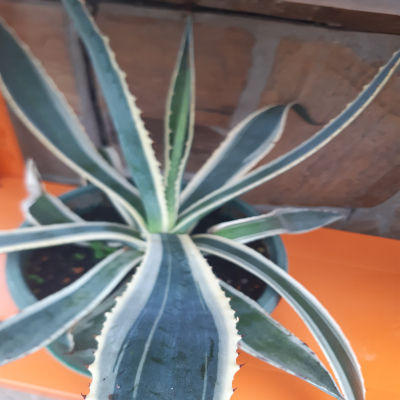

Nazwa zwyczajowa: agawa amerykańska / roślina stulecia
Rodzina: Asparagaceae
🌍 Występowanie
Pochodzi z Meksyku i południowych Stanów Zjednoczonych (głównie Teksas). Obecnie szeroko rozpowszechniona w klimatach suchych i śródziemnomorskich – naturalizowana m.in. w Europie, Afryce, Australii i Indiach.
🌱 Opis morfologiczny
- Kształt: rozeta z mięsistych, sztywnych liści
- Wysokość: do 2 m; średnica rozety do 3 m
- Liście: szaro-zielone, lancetowate, do 1,5 m długości
- Brzegi liści: z kolcami; zakończone ostrym cierniem
- Kwiatostan: wysoka wiecha do 8–9 m, pojawia się raz w życiu rośliny
🌸 Kwiaty
- Kolor: żółty
- Kształt: rurkowate, zebrane w rozgałęziony kwiatostan
- Okres kwitnienia: po 10–30 latach; roślina monokarpiczna – kwitnie raz, potem zamiera
🍒 Owoce i rozmnażanie
- Owoce: torebki z czarnymi nasionami
- Rozmnażanie: przez nasiona oraz odrosty boczne (adwentystyczne)
🌞 Wymagania uprawowe
- Światło: pełne słońce
- Podłoże: suche, dobrze przepuszczalne
- Wilgotność: niska; odporna na suszę
- Temperatura: minimum ok. 10°C; nie toleruje silnych mrozów
🏆 Ciekawostki
Choć nazywana „aloesem amerykańskim”, nie jest spokrewniona z aloesem. W kulturze meksykańskiej wykorzystywana do produkcji pulque i mezcalu. Jej włókna były używane do wyrobu lin i tekstyliów.
📷 Zdjęcia z prywatnej kolekcji
Prezentowane poniżej fotografie pochodzą z prywatnych zbiorów...
